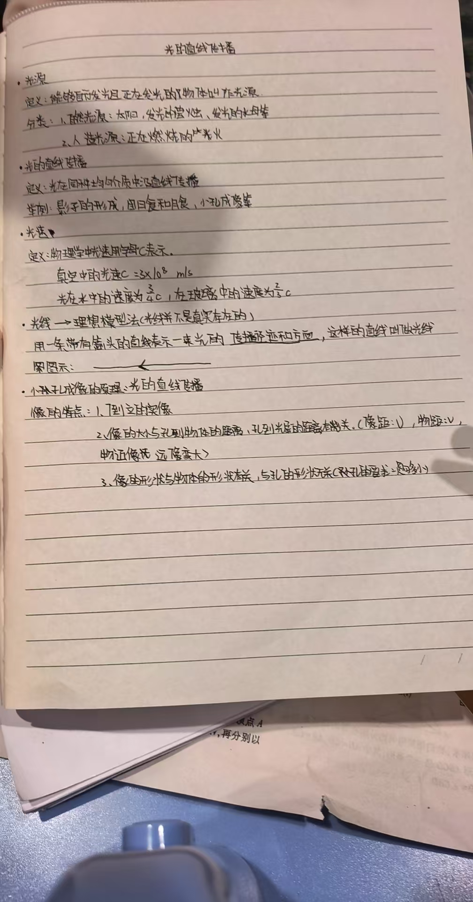

物体 160 → 80
保持光屏位置不变，把物体移近。像变大，方向仍倒立。不是物体本身长高了。
光源是自身正在发光的物体。我们能看见物体，是因为有来自它的光进入眼睛；这些光也可能是它反射的。
在同种、均匀的透明介质中，光沿直线传播。“同种、均匀”不能漏掉；这次实验把空气近似看作均匀的。
把滑块移到两端再移回中央。这里用细光束和不透明挡板建立理想模型，不模拟散射光。
不透明物体挡住部分光，后面有一片光到不了的区域，形成影子。在其他条件不变时，物体靠近点光源，屏上的影子通常变大。
用带箭头的直线表示光的路径和方向。空气中的尘埃或雾滴能把光散射进眼睛，帮助我们看到光束；并不是光路本身处处都能被看见。
位置、大小、距离均为示意。不是每次新月或满月都有食，因为三个天体通常不恰好排成一条直线。不要用肉眼或普通望远镜直接观察太阳。
红点标记物体上端，青点标记物体下端。沿着两条直线追踪：每个点的光穿过小孔后，到底落在屏幕哪里？
先猜：只把物体移近小孔，像会怎样？
拖动图中的黄色圆点，也可使用滑块。形状比较默认孔足够小；亮暗和模糊仅为定性示意；移动亮点只是追踪光路，不是真实光速。
保持光屏位置不变，把物体移近。像变大，方向仍倒立。不是物体本身长高了。
保持物体不动，把光屏移远。穿过孔的光继续散开，屏上像变大，通常也变暗。
孔足够小时，像仍然是物体的倒像，不变成三角形。树荫下的圆形光斑通常是太阳的像，不是树叶缝隙的形状。
在常见课堂实验范围内，孔变大，进光更多、像更亮，但各点形成的光斑更易重叠，像更模糊。孔太小会很暗；极小时还有衍射影响，因此不是越小越好。
像高 / 物高 = 屏到孔 / 物到孔
这是理想小孔模型的几何关系。例如物距 160 cm、像距 120 cm，像高为物高的 0.75 倍。图里放大的孔不是按真实尺寸画的。
光不需要介质，在真空中也能传播。声音不能在真空中传播。空气中的光速远大于声速。
真空中光速，初中计算采用这个近似值。空气中近似相同；水中约为 ¾c，普通玻璃中约为 ⅔c（玻璃种类不同会有差别）。
3 × 10⁸ m/s = 300 000 km/s，换单位时不要漏掉 1000。
近似忽略光的传播时间，用间隔秒数 × 340 m/s 估算距离。网页只模拟时间，不播放突然的雷声。
选完就能看原因；答错可以再试。全部答对后，再试着不用看笔记讲一遍。
你的作答只留在当前页面，不上传。
依据你提供的第二张照片整理。手写省略之处已在正文补全；互动图是教学示意，不是真实实验数据。

自己控制入射角，验证反射定律，再看漫反射为何也守规则。